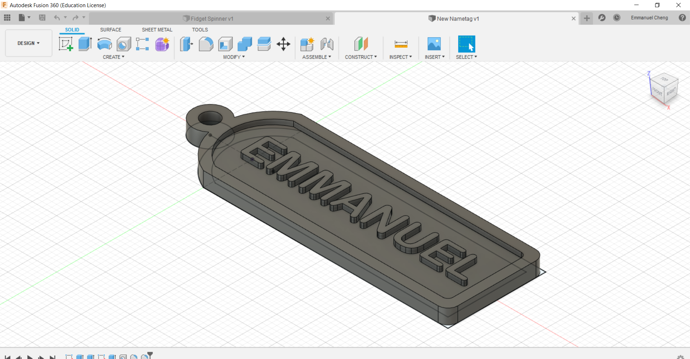

CAD or CADD (Computer Aided Design and Drafing) are a set of digital vector tools used to design objects on your computer and simulate and analyse them without actually building or fabricating the actual object. Once designed and tested, they can then be fabricated by sending the design into a 3D printers or computer cutting. CAD is often used in Electronic Design Automation, Architectural & Building services as well as Product design & manufacturing
Autodesk Fusion 360
For CAD, I used Fusion 360 which is an Integrated CAD, CAM, and CAE software. The commands of the app is similar to Autodesk Inventor which I learnt in the module Computer Aided Design. My first project with Fusion 360 is to design a nametag.
- I created a sketch, which is a 2 dimensional model of the nametag, and used a rectangle, an arc and a circle to create the shape of the nametag.
- I included the relevant dimensions of the nametag before using the command Extrude to turn the sketch into a 3 dimensional body by creating a height to the nametag. I extruded the edge by main body by 2mm, and the edge by 3mm.
- I created a hole for the key ring of diameter 2.5mm.
- I created another sketch to put my name in using the Create Text function before extruding it by 1mm.
- I rounded off the corners using the Fillet command by 2mm for the outer corner, and 1mm for the inner corner.
The Finished Product
For the next project, I designed a fidget spinner that would house a ABEC 608 Bearing and 3 M8 stainless steel hex nuts.
- I started off with a sketch with a circle of diamter 40mm as a limit to how big the fidget spinner is, before designing one arm of the fidget spinner using a hexagon to house the nut, a circle for the centre, and 2 lines tangent to the circle for the arm.
- I then extruded one arm by 8mm
- I used Pattern - Circular to duplicate the arm 2 more times around an the Z-axis.
- Lastly, I used a fillet of 12mm between the 3 arms and a champfer of 0.5mm at the corners.
The Finished Product